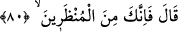
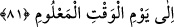

80. Allah: Haydi, sen mühlet verilenlerdensin, buyurdu.
“Allah: Haydi, sen mühlet verilenlerdensin,” yâni melek vb. varlıklar gibi, hikmetim
gereği ezelde ecellerini tehir ettiğim varlıklar zümresindensin “buyurdu.”
81. Bilinen güne kadar.
“Bilinen güne” yâni Allah’ın, tüm yarattıklarının yok oluşu için takdîr edip belirlemiş
olduğu o vakte, yâni sura ilk üfürülüşe “kadar.” Yoksa istemiş olduğun yeniden dirilme
vaktine kadar değil.
Âkâmü’l-mercân’da der ki: Kur’an’ın zâhiri, tanınan bu sürenin özellikle İblis’e
verilmiş bir özellik olmadığını ifâde eder. Öte yandan yavrularının ve kabilesinin de
kendisi gibi süre tanınanlar kapsamında olduğuna dâir bir delil de yoktur.
Bazı âlimler de der ki: Şeytanlar birinci üfürülüşe dek ölmeyip nesil be nesil
çoğalacaklardır. Cinler ise böyle olmayıp bunlar tenasül eder/çoğalırlar, fakat ölürler.
Muhtemeldir ki Hızır (a.s.) gibi bazı insanlarda olduğu gibi bir takım cinlere de süre
tanınmış olabilir.
Konu ile ilgili olarak öyle görünüyor ki, Hızır ve benzerleri, müminler öldüklerinde
ölecekler ve bunlardan hiç kimse kalmayacak ve bu kıyametin kopmasından çok uzun bir
süre önce olacaktır.
el-İrşâd’da der ki: Ayrıca, “haydi, sen...” ifâdesi, mezkûr sürenin ona özgü biçimde
ve duâsının karşılığında o anda tanınmayıp ezelî olarak tanındığını bildirmektedir.
İblis’in kendisine süre tanınmasını istemesi, azâbı tehir için değil, ölümü erteletmek
içindir.
Fakîr (Bursevî)’ye göre hiç şüphe yoktur ki, Allah İblis’in duâsını, dünyadaki bu uzun
süreli kalışı lânetlenmezden evvelki uzun süreli ibâdet döneminin karşılığı ve ecri olsun
diye kabul buyurmuştur. Kâfirlerin dünya işleri ile ilgili duâları kabul edilir. Bu
bakımdan tanınan sürenin o anda tanınmış olmasına mâni bir durum yoktur.
Sürenin İblis’in ezelî olmayan (hâdis) duâsı üzerine tanınmış olması da buna delâlet
eder. Fakat bu, onun ezelî olarak süre tanınanlardan olmasına mâni değildir. Zira ebedle
ilgili olan her bir hâdis şey, kadîm bir emre dayanır. Düşünelim, İblis’in Allah’ın
verdiği emri çirkin görmesinden kaynaklanan inkârı, Allah’ın ezelî ilmindeki inkârından
kaynaklanmıyor mu? Diğer bir husus da süre talebinin hem azâbı hem de ölümü
erteletmeye yönelik bir talep olmasını engelleyen bir şeyin olmadığıdır. Çünkü lânet,
azâbı gerektiren bir şey olduğundan, İblis’in süre talebi de hemen yakında gelecek bir